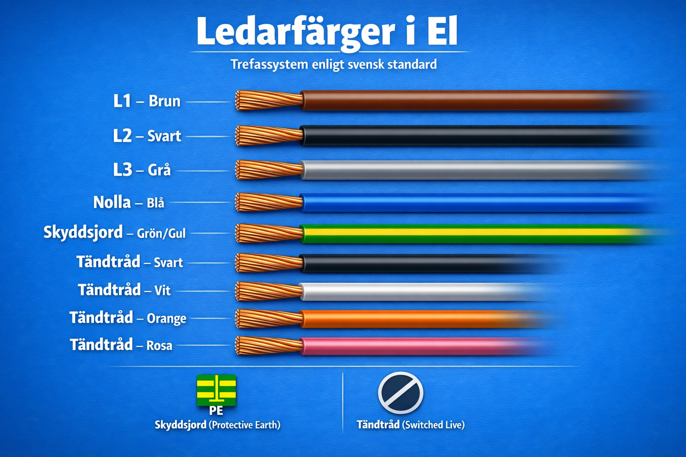
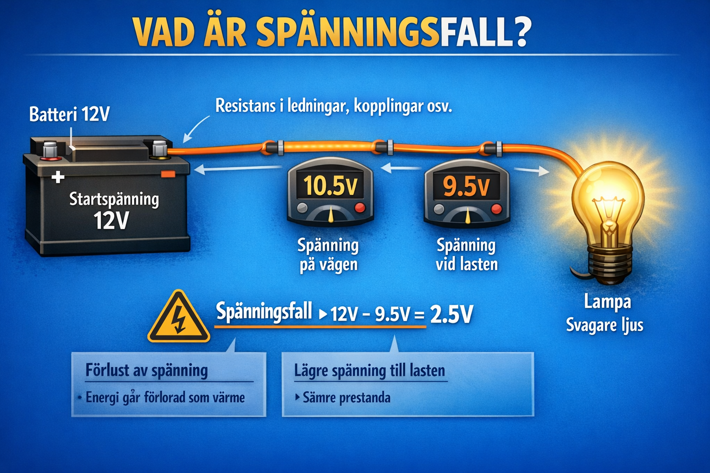
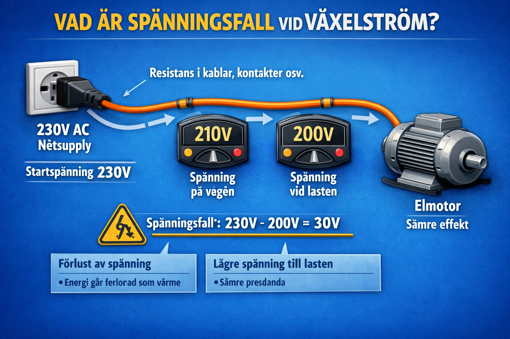

Avsnitt 3
Installation & Dimensionering
📐 Resistans i ledare — R = ρ · LA
En ledares resistans beror på materialet (resistivitet ρ), längden L och tvärsnittsarean A.
Formel:
R = ρ · LA
R = resistans (Ω)
ρ = resistivitet (Ω·mm²/m)
L = ledarlängd (m)
A = tvärsnittsarea (mm²)
R = ρ · LA
R = resistans (Ω)
ρ = resistivitet (Ω·mm²/m)
L = ledarlängd (m)
A = tvärsnittsarea (mm²)
Materialvärden:
🟠 Koppar: ρ = 0,018 Ω·mm²/m
🔵 Aluminium: ρ = 0,028 Ω·mm²/m
Koppar leder bättre (lägre ρ) men kostar mer.
🟠 Koppar: ρ = 0,018 Ω·mm²/m
🔵 Aluminium: ρ = 0,028 Ω·mm²/m
Koppar leder bättre (lägre ρ) men kostar mer.
Välj material
🟠 Koppar
ρ = 0,018 Ω·mm²/m
🔵 Aluminium
ρ = 0,028 Ω·mm²/m
🔒 Säkringstabell & Ledarfärger
Välj rätt ledararea till säkringen – för liten area ger överhettning och brandrisk.
| Säkring | Ledararea | Isolationsfärg | Typisk användning |
|---|---|---|---|
| 6 A | 0,75 mm² | Grön | Lamputtag, belysning |
| 10 A | 1,5 mm² | Röd | Belysningskretsar |
| 16 A | 2,5 mm² | Grå | Vanliga eluttag |
| 20 A | 4,0 mm² | Blå | Diskmaskin, tvättmaskin |
| 25 A | 6,0 mm² | Gul | Spis, torktumlare |
Kom ihåg: Vid parallellkoppling av uttag delar alla på samma säkring. Räkna alltid på worst-case-last.
🎨 Ledarfärger – svensk standard
Färgerna på ledarna inne i kabeln är standardiserade för att förhindra felkopplingar. Lär dig dem utantill.

| Ledare | Färg | Beteckning |
|---|---|---|
| Fas | Brun | L / L1 |
| Nolla | Blå | N |
| Skyddsjord | Grön/Gul | PE |
| Tändtråd | Grå | Switched Live |
Trefas — L1, L2, L3:
L1 = Brun | L2 = Svart | L3 = Grå | N = Blå | PE = Grön/Gul
L1 = Brun | L2 = Svart | L3 = Grå | N = Blå | PE = Grön/Gul
Fel färg = livsfara. Blanda aldrig ihop fas och nolla. Grön/gul FÅR ALDRIG användas som fas eller nolla.
⚠️ Spänningsfallskalkylator
Vad är spänningsfall?
En kabel har alltid en viss resistans. När ström flödar genom resistansen förbrukas en del av spänningen längs vägen — det är spänningsfallet. Apparaten i slutet av kabeln får därför lite lägre spänning än vad som matas in.

DC-exempel – batteri och lampa

AC-exempel – elnät och elmotor
Varför uppstår det?
Alla kablar har resistans. Ju längre och tunnare kabel, desto högre resistans och större spänningsfall.
Alla kablar har resistans. Ju längre och tunnare kabel, desto högre resistans och större spänningsfall.
Faktorn 2 i formeln
Strömmen går fram i L-ledaren och tillbaka i N-ledaren — båda bidrar till fallet, därav × 2.
Strömmen går fram i L-ledaren och tillbaka i N-ledaren — båda bidrar till fallet, därav × 2.
Konsekvenser
Motorer kan överhettas, lampor lyser svagare, elektronik kan fungera sämre eller gå sönder.
Motorer kan överhettas, lampor lyser svagare, elektronik kan fungera sämre eller gå sönder.
Hur minskar man det?
Använd tjockare kabel (större A), kortare dragning, eller flytta säkringsskåpet närmare lasten.
Använd tjockare kabel (större A), kortare dragning, eller flytta säkringsskåpet närmare lasten.
Formeln:
U_fall = 2 · ρ · L · IA
|
ρ = resistivitet L = ledarlängd (m) I = ström (A) A = area (mm²)
Tillåten gräns: max 4 % av nominell spänning — vid 230 V innebär det max 9,2 V fall.
Tillåten gräns: max 4 % av nominell spänning — vid 230 V innebär det max 9,2 V fall.
Beräkna spänningsfallet
U_fall = 2 · ρ · L · IA
Faktorn 2 = fram- och returledare
Vad är U_fall?
Skillnaden i spänning mellan källan och belastningen. Exempel: källan ger 230 V men lampan får bara 223 V → U_fall = 7 V. (Kallas även ΔU i läroböcker)
Skillnaden i spänning mellan källan och belastningen. Exempel: källan ger 230 V men lampan får bara 223 V → U_fall = 7 V. (Kallas även ΔU i läroböcker)
Spänning vid belastningen
Ubel = Utot − U_fall
Det som "är kvar" efter spänningsfallet i kabeln
Tillåten gräns: max 4 % av nominell spänning (= max 9,2 V vid 230 V).
–
Regel: Spänningsfall > 4 % av 230 V = > 9,2 V är inte tillåtet enligt SS 437 01 40. Välj tjockare ledare eller kortare dragning.
✏️ Försök själv
- Beräkna resistansen i en 25 m lång kopparledare med area 1,5 mm².
- Vilken ledararea behövs för en 16 A säkring?
- En krets är 40 m lång, 2,5 mm² koppar, 10 A last (230 V). Är spänningsfallet OK?
- Vad händer om du väljer 0,75 mm² kabel till ett 16 A uttag?